Eevee Freestyle
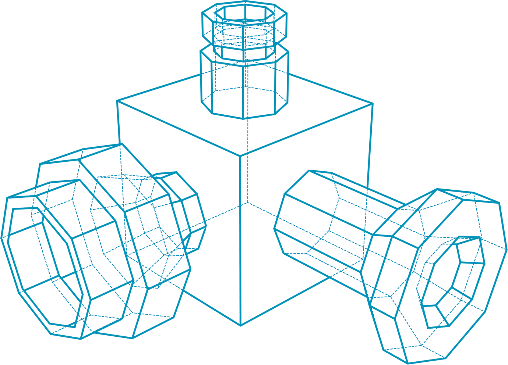
Render Properties
- In 'Render Properties' panel, select Render engine 'Eevee'
- Select Render and sampling (Render=20, View=4)
- Enable freestyle in Render properties
- In Film tab, enable 'Transparent'.
- 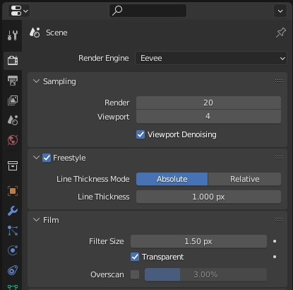
View Layer Properties
- Enable 'As Render Pass'.
- Select 'Compositing' tab.
- Enable 'Use Nodes' in topbar. Connect Freestyle node to image.
- 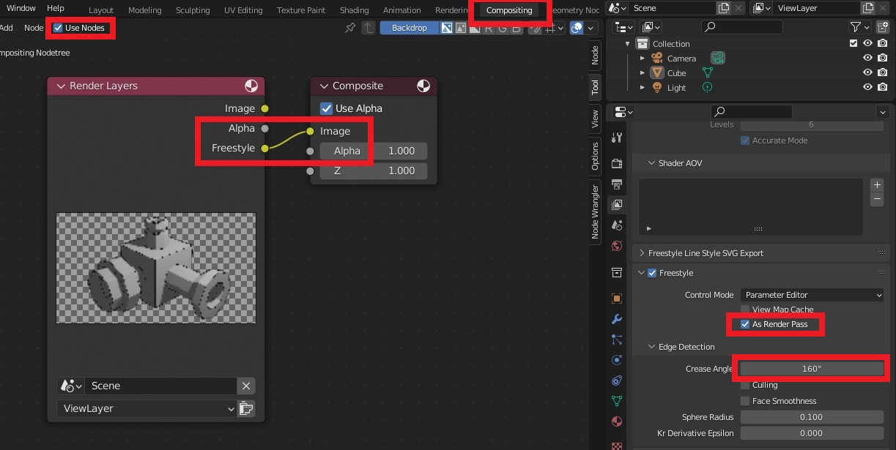
Line Styles
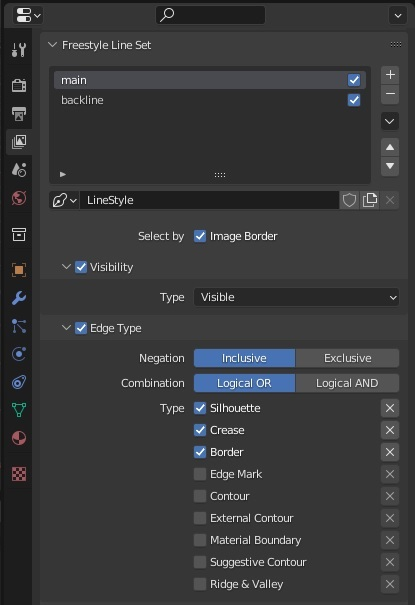
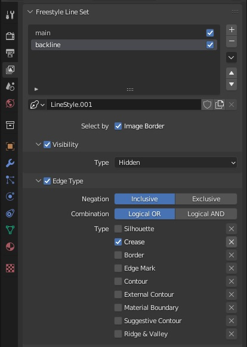
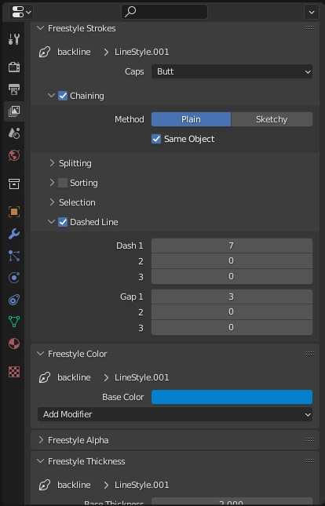
Cycles Freestyle
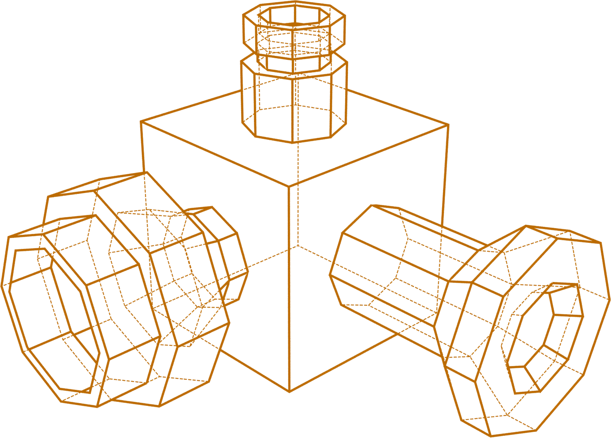
Render Properties
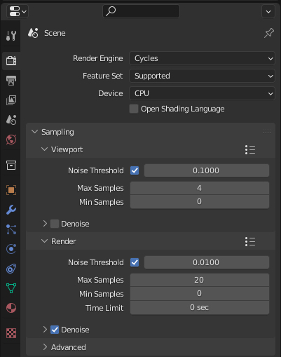
View Layer Properties
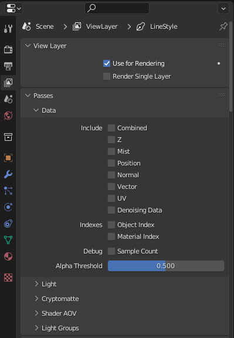
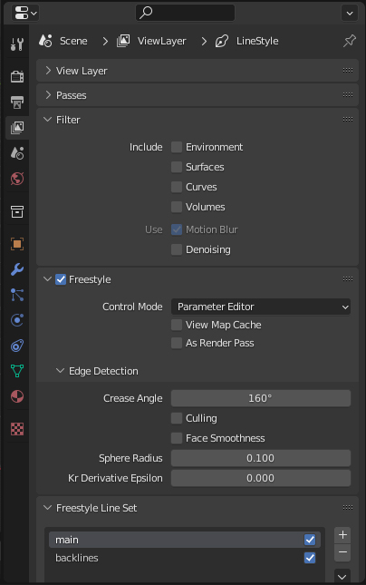
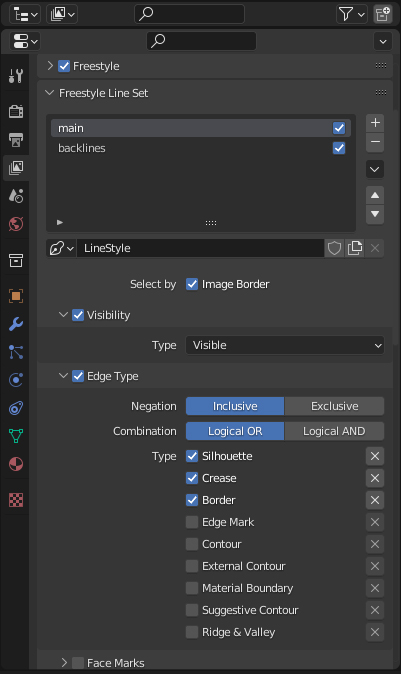
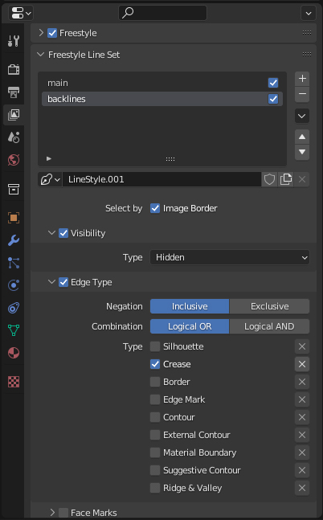
Gradient Strokes
- Add an Empty object in scene. Select it as target object in Distance from object panel.
- Select the object and click Fill Range by Selection
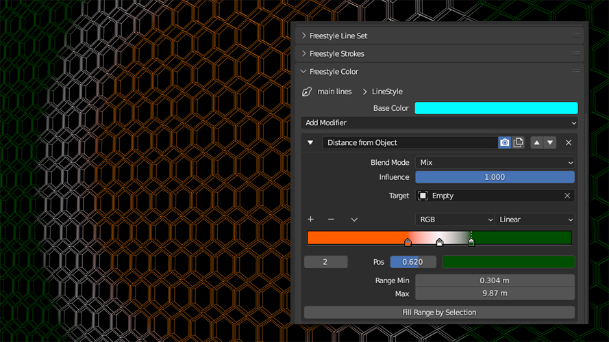